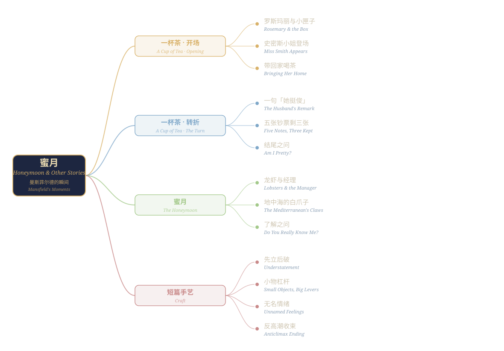

蜜月
〇 · 书籍信息
基本信息
| 书名 | 《蜜月》——凯瑟琳·曼斯菲尔德短篇选集，收《一杯茶》《蜜月》《起风了》《康乃馨》《夜阑》《没有脾气的男人》等 20 篇 |
|---|---|
| 作者 | 凯瑟琳·曼斯菲尔德（1888–1923），生于新西兰，现代英语短篇小说奠基人之一，与乔伊斯同代。1923 年病逝于法国枫丹白露，年仅三十四岁——一辈子在疗养地写伦敦客厅里的事 |
| 文学谱系 | 公认的「英语世界的契诃夫」：不写大事变，写日常里的裂缝；把短篇小说从「讲一个完整故事」解放成「捉一个真实瞬间」。本集《一杯茶》《蜜月》《起风了》皆其名作 |
| 体裁 | 短篇集：人物多半在故事里什么大事都没做，但读完你确信这个人的人生已经悄悄拐弯 |
| 一句话 | 曼斯菲尔德不写故事的高潮，只写高潮前后那半寸：一只二十八基尼的小匣子、一杯带回家的茶、一次蜜月里的提问——生活最平常的地方，恰是命运悄悄转弯的地方。 |
一 · 核心主题总览
二十篇短篇背后埋着四组母题：① 瞬间的美学（全书引擎）
曼斯菲尔德的短篇几乎没有「情节」，只有「瞬间」：罗斯玛丽带陌生姑娘回家的那半分钟、范妮问出那句话的那一秒。她证明了短篇小说的价值不在事件，而在意识被照亮的刹那——后来的英语短篇教学，一半师承于此。
② 善意的表演学
《一杯茶》写的是慈善：阔太太把穷人带回家施舍，动机一半真心、一半虚荣。善意一旦被观看，就变成了表演；而表演者自己是最后一个知道的——丈夫一句「她挺俊」，立刻把慈善戳穿成攀比。
③ 婚姻里的「了解」
《蜜月》里范妮问的不是一个问题，是一个恐惧：相爱的人会不会其实并不想了解彼此？曼斯菲尔德把婚姻写成一场持续的对暗号——答错了不会吵架，只会慢慢不说话。
④ 小物件的大杠杆
小匣子、龙虾、巧克力蛋糕、一支康乃馨——她惯用一件具体的小物给全篇上发条。道具越家常，撬动的人物关系越重；写作课可以直接抄这一手。
二 · 第一段 短篇的手艺—— 契诃夫的门徒 · 无情节传统 ——
先立后破的开场笔法
《一杯茶》开篇是英语短篇的经典教学案例：先立「算不上漂亮」，再自问「俊吗」，接着把人「拆开来看」——一句开场白同时完成了人物素描、阶级定位（能逛得起彭德街）与叙事腔调（略带刻薄的亲昵）。曼斯菲尔德的句子短、口语化、几乎不带难词，是「每个词都认识、连起来才见功夫」的最佳示范；精读时重点看她怎么用否定句造节奏。
◆ 语言学习 · 开场 · 人物
| subtle /ˈsʌtl/ | adj. 微妙的 —— 例句：a subtle shift of mood（写心理的关键词）。subtlety n.；与 delicate 辨析：subtle 强调「不易察觉」 |
|---|---|
| trivial /ˈtrɪviəl/ | adj. 琐碎的 —— 例句：vain trifles（小匣子段）。a trifle「有点儿、稍微」副词用法更常见 |
| glimpse /ɡlɪmps/ | n./v. 一瞥 —— 例句：a glimpse of her hidden self（各篇通法）。catch a glimpse of「瞥见」 |
| epiphany /ɪˈpɪfəni/ | n. 顿悟（文学术语）—— 指人物在平凡时刻突然看清真相的瞬间；曼斯菲尔德与乔伊斯的看家本领 |
句型 ｜ 「A was not exactly B. No, you couldn't have called her B. Pretty? Well, if you took her to pieces…」——先立后破三连：陈述否定 → 补刀 → 自问自答再拆解。英语写「不算漂亮」的全部礼貌分寸都藏在这套否定节奏里；写人物评价，学这个次序，别上来就说最重的话。
契诃夫的门徒与「无情节」传统
译者序与文学史都指向同一处师承：契诃夫。她把俄国人「不解决、只呈现」的短篇哲学带进英语，人物不成长、悬念不兑现、结尾往往停在半空。《起风了》全篇写一个女孩顶着风去上音乐课，事件等于零，风就是全部剧情。「无情节」不是没故事，是把故事的重量从「发生了什么」挪到「意识里发生了什么」——这是精读她与读通俗小说最大的分野。
◆ 语言学习 · 风格 · 传统
| undercurrent /ˈʌndəkʌrənt/ | n. 暗流 —— 例句：an undercurrent of rivalry（婚姻对话段）。under- 前缀词族：understate/undertone |
|---|---|
| pretext /ˈpriːtekst/ | n. 借口 —— 例句：under the pretext of charity（一杯茶）。on the pretext of doing「以……为名」 |
| margin /ˈmɑːdʒɪn/ | n. 边缘，页边 —— 例句：living on the margins（穷人形象）。笔记用语 in the margin「在页边」 |
| rustle /ˈrʌsl/ | v./n. 沙沙作响 —— 例句：the wind rustling the leaves（起风了）。拟声动词词族：crackle/whistle |
习语 ｜ between the lines 字里行间——读曼斯菲尔德的正确姿势；read between the lines 读出言外之意。她的对话尤其需要这套读法：人物说出口的永远比心里想的少。她不写潜台词，她只给台词，潜台词是你的作业。
三 · 第二段 《一杯茶》精读—— 二十八基尼 · 史密斯小姐 ——
一只小匣子的价钱
罗斯玛丽在古董店看中一只珐琅小匣，标价二十八基尼——她犹豫的不是钱（「即使有的是钱」），是花得值不值；她要留着它，像留着随时可以取悦自己的筹码。走出店门，冬雨初落，她忽然「觉得真是可怕」——一场不知来由的脆弱。作者故意不给这阵情绪命名：阔太太的空虚，是连她自己都没词可用的东西。就在这时，史密斯小姐出现了。
◆ 语言学习 · 小匣子 · 古董店
| exquisite /ˈekskwɪzɪt/ | adj. 精致的 —— 例句：an exquisite little enamel box（小匣子段）。与 delicate/beautiful 辨析：exquisite 强调工艺之精 |
|---|---|
| triumph /ˈtraɪəmf/ | n. 胜利（感）—— 例句：a little thrill of triumph（「胜利的喜悦」原文）。triumphant adj.；与 victory 辨析：triumph 偏情绪 |
| captive /ˈkæptɪv/ | n. 俘虏 —— 例句：the little captive she had netted（「刚落网的小俘虏」）。captivity n.；capture v. 同族 |
| hesitate /ˈhezɪteɪt/ | v. 犹豫 —— 例句：she hesitated over the box（还价段）。hesitation n.；without hesitation「毫不犹豫」 |
句型 ｜ 「Even if she had the money…」＋迟疑的动作描写——写「不是没钱，是舍不得」这种心理，别直接说，给一个动作：她把手套扣好、含糊搭腔、话说半截。动作是心理的替身；这一段最见功力处就是「不动声色」四个字对应的英语写法。
史密斯小姐与三张一镑
饥寒交迫的年轻姑娘向她讨一杯茶钱，罗斯玛丽忽然觉得这「宛如陀思妥耶夫斯基小说里的一段情节」——这句自我联想是全篇最刻薄的一笔：慈善尚未开始，她已经预支了讲给别人听的版本。带回家、施茶、听丈夫说「她挺俊」，顿时转念塞了三张一镑送客，回头立刻要买那二十八基尼的匣子，还撒娇问「我俊吗」。丈夫那句「你这是笨哪」的「俊」（foolish），和她要听的「俊」（pretty），在中文里恰好同字——翻译无法还原的歧义，正是全篇的扣子。
◆ 语言学习 · 慈善 · 表演
| whim /wɪm/ | n. 一时兴起 —— 例句：on a whim she took the girl home（带回段）。whimsical adj. 古怪的 |
|---|---|
| shiver /ˈʃɪvə/ | v./n. 发抖 —— 例句：shivering as if she had come out of cold water（原文）。与 tremble 辨析：shiver 多因寒冷 |
| faint /feɪnt/ | v. 晕倒 —— 例句：I shall faint if I don't eat（原文）。faint adj.「微弱的」一词两义 |
| patronage /ˈpeɪtrənɪdʒ/ | n. 施舍，庇护 —— 本篇主题词：慈善与居高临下共用一个词根（patron） |
习语 ｜ make a scene 当众失态——她怕姑娘在她家「晕倒」闹出场面；to one's heart's content 尽情地——富家小妞儿开柜子拆匣盖的写法。慈善的真相藏在动词里：谁在参观谁。
四 · 第三段 《蜜月》精读—— 地中海 · 巧克力蛋糕 ——
龙虾、别墅与一件小事故
新婚的乔治与范妮在法国南方度蜜月：坐「自家的」出租马车、去「龙虾繁殖的地方」喝茶——引号里全是新钱的姿态。乔治摆出「见过世面的男人」对抗谄媚的经理，其实是被吓着了；范妮看穿而不说破，只「猛地感到一股恩爱」。曼斯菲尔德写婚姻的底色：一方演，一方看，互相把戏当成真的来爱。地中海被写成「死亡陷阱」——美丽而狡黠，白爪子摸一下岩石又缩回去；丈夫偏要明早下水。
◆ 语言学习 · 蜜月 · 海滨
| cunning /ˈkʌnɪŋ/ | adj. 狡黠的 —— 例句：beautiful, cunning Mediterranean（原文名句）。作名词=狡诈；与 sly 辨析：cunning 更书面 |
|---|---|
| lobster /ˈlɒbstə/ | n. 龙虾 —— 例句：where the lobsters breed（原文）。龙虾水槽一景：服务生拿餐巾当鱼鳍拍动 |
| villa /ˈvɪlə/ | n. 别墅 —— 例句：a first-rate villa（海滨段）。地中海度假词族：terrace/promenade/palm |
| fidget /ˈfɪdʒɪt/ | v. 坐立不安 —— 例句：the manager fidgeting with the vase（经理段）。小动作写讨好：拿开花瓶又放回来 |
习语 ｜ wild horses couldn't drag one 多少匹野马也拦不住——原文「明天早晨我就去洗，多少匹野马也拦不住我」的对应习语，表示「说什么也要做」；die for 极想要——「不想来点儿烤面包片？」的客气攻防。蜜月里每句客气话底下都有一层较劲。
「你真正了解我了吗」
茶与巧克力蛋糕之间，乐队奏起快活的曲子，范妮忽然保证式地提问：现在你真正、真正了解我了吗？她说出了恐惧——相爱的人常常并不想了解彼此，「在最重要的事情上，他们彼此会产生误会」。乔治答得漂亮而潦草；她要的其实不是一个答案，是「永远不要变成那样」的口头盟约。这是全书最深的一问：亲密关系的敌人不是不爱，是不想了解。结尾停在音乐与笑声里，问题悬空——典型的曼斯菲尔德收束。
◆ 语言学习 · 婚姻 · 对话
| intimate /ˈɪntɪmət/ | adj. 亲密的 —— 例句：intimate knowledge of each other（对话主题）。intimacy n.；副词 intimately「透彻地」正是问题核心 |
|---|---|
| misunderstanding /ˌmɪsʌndəˈstændɪŋ/ | n. 误会 —— 例句：they misunderstand each other in the most important things（原文义）。前缀 mis- 词族：misjudge/misread |
| assure /əˈʃʊə/ | v. 保证，使确信 —— 例句：Promise you'll answer. Promise.（原文连用）。assure sb that；与 ensure 辨析 |
| tender /ˈtendə/ | adj. 温柔的 —— 例句：tender feelings（乔治对范妮的亲昵）。tender age「幼年」一词两用 |
句型 ｜ 「Do you really know me—really, really know me?」——副词的机械重复是最省力的强调法：really, really / truly, truly / never, never。口语强调靠重复，不靠换大词；写亲密对话，重复比修辞诚实。
五 · 第四段 其余篇目掠影—— 起风了 · 康乃馨 · 夜阑 ——
起风了（The Wind Blows）
全篇写一个女孩顶着风走去上音乐课：风掀裙子、按帽子、把乐谱与头发一起卷上天——事件一件没有，感官密度却拉满。「风」在她的笔下是意识的形状：人被推着走、抓不住、又暗自欢喜。精读价值在于动词：gust/rustle/swirl/whirl 一串风词轮换，是英语动词链的标准练习。此篇与她晚年病中的日记气质相通：风景替人说话。
◆ 语言学习 · 风 · 动词链
| gust /ɡʌst/ | n. 一阵狂风 —— 例句：a gust of wind（起风了）。a gust of laughter/anger 引申用法 |
|---|---|
| swirl /swɜːl/ | v. 打旋 —— 例句：leaves swirling in the air（风段）。与 whirl 辨析：swirl 更柔 |
| lyrical /ˈlɪrɪkl/ | adj. 抒情的 —— 例句：the lyrical sweep of the passage（赏析用语）。lyric n. 抒情诗；lyricism n. |
| altogether /ˌɔːltəˈɡeðə/ | adv. 完全地 —— 例句：altogether beautiful（总评句）。all together「一起」辨析 |
句型 ｜ 「The wind is blowing. The wind is blowing harder…」——同句重复递进（blowing→harder→still harder）：用句子的呼吸模拟风的节奏。形式模仿内容，是抒情写作的隐形技巧；仿写一段天气试试。
日常的裂缝：康乃馨 · 夜阑 · 没有脾气的男人
集子里其余各篇共用一套方法论：从「今天没什么事」起步，让一件小物（康乃馨、夜里的灯、一个没有脾气的男人）撬出一道缝，人物的真实从缝里漏出来。曼斯菲尔德一生写得不多、走得极早，留下的却是一种至今通行的短篇语法：不判决人物，只让他们在小事里现形。读完本册回头看《一杯茶》，你会认出这个语法的第一课。
◆ 语言学习 · 方法 · 收束
| carnation /kɑːˈneɪʃn/ | n. 康乃馨 —— 例句：a carnation（篇名）。花卉词族：violet/chrysanthemum/narcissus |
|---|---|
| dusk /dʌsk/ | n. 黄昏 —— 例句：at dusk the lamps were lit（夜阑）。twilight 更文学，dusk 更日常 |
| numb /nʌm/ | adj. 麻木的 —— 例句：numb with routine（人物状态）。fingers go numb「手指冻麻」 |
| drift /drɪft/ | v. 漂移，不知不觉地 —— 例句：drift into sleep/talk（各篇收束常用）。drift apart「渐行渐远」——婚姻篇的暗线词 |
习语 ｜ drift apart 渐行渐远——曼斯菲尔德婚姻题材的真正动词；let sleeping dogs lie 别惹沉睡的狗——「没有脾气的男人」的日常注脚。她的短篇从不惊动睡着的狗，只把绳子递到你手里。
六 · 人物图鉴与成长弧线—— 主角配角 · 一张表看穿 ——
主要人物
罗斯玛丽 Rosemary Fell——《一杯茶》主角：年轻、聪明、极时髦、真有钱。弧线：空虚 → 慈善冲动 → 被丈夫一句「她挺俊」击中 → 赶客、买匣、问「我俊吗」。她不是坏人，她是从没机会知道自己虚荣的人。
史密斯小姐 Miss Smith——讨茶钱的年轻姑娘：全书的功能镜。她的饥饿照出罗斯玛丽的富余，她的「俊」照出罗斯玛丽的妒——穷人在这篇小说里只有一个功能：让有钱人看清自己。
菲利普 Philip——罗斯玛丽之夫：一眼看穿慈善背后的攀比，一句「你这是笨哪」完成全篇的裁决。家里最清醒的人，也最懂得怎么哄住这清醒。
范妮 Fanny——《蜜月》女主角：敏感、崇拜丈夫、随时准备把崇拜升级为了解。她的问题（「你真正了解我了吗」）是全书思想的最高点。
乔治 George——范妮之夫：急性子、要面子、把「见世面」演成铠甲。他爱范妮的方式是吻，不是回答——曼斯菲尔德对婚姻的判词就藏在这不对称里。
次要人物（功能位）
| 古董店老板 | 小匣子段的镜子：苍白的指头「怯生生」伸向她的手——穷人连赞美富人都要先请求原谅 |
|---|---|
| 经理与跑堂 | 「身穿大礼服的鱼」：过度的殷勤是另一种阶级暴力，乔治用沉默反抗它 |
| 仆人珍妮 | 被刻意绕开的在场者：罗斯玛丽不让仆人看见史密斯小姐——慈善需要观众，但不要证人 |
| 契诃夫 | 不在场的导师：她承认要写「契诃夫写过的那种东西」——短篇从此不讲道理，只给瞬间 |
七 · 主题与象征—— 每个道具都在说话 ——
| 小匣子 ↔ 虚荣的定价 | 二十八基尼：舍不得的是「值不值」而非「买不买得起」——富人的犹豫，永远是关于怎么花的犹豫 |
|---|---|
| 一杯茶 ↔ 慈善的门槛 | 她请的其实是自己：施茶是入场券，把穷人变成道具，把自己变成主角 |
| 三张一镑 ↔ 逐客令 | 钱在这里是礼貌的驱逐令：用钞票结束一段关系，是最体面的失礼 |
| 龙虾 ↔ 新钱的姿态 | 「龙虾繁殖的地方」：炫耀要绕一个不懂装懂的弯——新贵与旧贵隔着一道发音 |
| 地中海 ↔ 婚姻的深处 | 美丽而狡黠、白爪子缩回去：他们度蜜月的地方，就是他们尚未了解的彼此 |
| 风 ↔ 意识 | 《起风了》的风推着人走、掀翻一切又什么都没破坏——意识本身 |
八 · 写作手法赏析—— 怎么写，就能怎么学 ——
① 先立后破的开场
「算不上漂亮。不，不能说她漂亮。俊吗？」——否定三连造节奏，评价人物先给分寸再给刀。学写开场：先立，再破，最后自问。
② 小物撬动大关系
小匣子→虚荣，龙虾→新钱，康乃馨→日常的裂缝。道具选得越家常，主题落得越重；练笔从「给人物一件东西」开始。
③ 不写潜台词的对话
人物说的永远比想的少，作者一字不补——读她的对话要「读字里行间」；写作上，删掉所有替人物解释的句子，对话立刻变高级。
④ 情绪的无名化
罗斯玛丽的「真是可怕」、范妮的突然提问：重要情绪一律不给名字，只给动作与天气。命名的情绪是死的，没命名的情绪是读者自己的。
⑤ 反高潮收束
结尾停在半空：问题悬着、音乐未停、匣子还没买——现代短篇的收束不结束事件，结束的是读者的想象。
九 · 名段欣赏—— 原文精读 · 逐段赏析 ——
十 · 金句摘录—— 14 条 · 中英对照 · 带出处 ——
"Rosemary Fell was not exactly beautiful. No, you couldn't have called her beautiful. Pretty? Well, if you took her to pieces…"罗斯玛丽·菲尔长得算不上漂亮。不，不能说她漂亮。俊吗？喏，要是把她拆开来看的话……—— 《一杯茶》· 开篇
"「二十八基尼。」罗斯玛丽不动声色。即使有的是钱……她神色迟疑，含含糊糊地搭着腔。"—— 《一杯茶》
"有时，生活中会遇到这种可怕的时刻，一个人从自己隐蔽的地方探出头朝外一望，觉得真是可怕。"—— 《一杯茶》
"跟我回家喝茶去吧。"—— 《一杯茶》
"饥饿的人好摆布。"—— 《一杯茶》
"她盯着这个刚落网的小俘虏，简直想说一句：「我到底把你弄到手啦。」这话当然是善意的。啊，岂止善意呢。"—— 《一杯茶》
"她拉开抽屉，拿出五张一镑钞票，看了看，又塞回两张，攥着剩下的三张，走回卧室。"—— 《一杯茶》
"这却还不是罗斯玛丽真要说的。"—— 《一杯茶》· 结尾
"咱们到龙虾繁殖的地方去喝茶吧，你想去吗？"—— 《蜜月》· 开场
"美丽而狡黠的地中海！它波涛滚滚地横在他们面前，光滑的白爪子触着岩石，又缩了回去……"—— 《蜜月》
"想想看，多么奇妙啊。咱们在这里完全不受干扰，离开了所有的人，谁也不会吩咐咱们回家去……咱们可以自由自在。"—— 《蜜月》
"此时此刻，有没有音乐都无所谓。除了爱，什么都无所谓。"—— 《蜜月》
"常常有这样一种情况，人们即使相互爱着，可好像彼此——怎么说好呢——彼此了解得并不很透彻。在最重要的事情上，他们彼此会产生误会。"—— 《蜜月》
"你认为，现在你真正了解我了吗？我是说真正、真正地了解我吗？"—— 《蜜月》
十一 · 拓展阅读—— 原文 · 词条 · 译文 ——
原文与文本
- A Cup of Tea（Wikipedia 词条） —— 1922 年发表，曼斯菲尔德最常入选选集的短篇之一
- The Garden Party and Other Stories（Project Gutenberg） —— 其最著名短篇集全文公版，含《起风了》同源风格篇章，可对照精读
作家与背景
- Katherine Mansfield — Wikipedia —— 生平：新西兰—伦敦—枫丹白露；与伍尔夫、劳伦斯的交往
- 契诃夫（Anton Chekhov）— Wikipedia —— 「无情节短篇」的源头；理解曼斯菲尔德必先理解契诃夫
写作方法
- Short story — Wikipedia —— 现代短篇「瞬间美学」谱系：契诃夫—曼斯菲尔德—乔伊斯
十二 · 个人感悟与心得—— 三点心得 ——
一杯茶 · 一个问题 · 一阵风
读《一杯茶》最大的后劲，是发现自己也说过「我乐意，这不就是个理由吗」。善意的动机很难百分百干净，这不是罪；问题在于罗斯玛丽从头到尾没机会看清自己——她的生活里没有一面不讨好的镜子。丈夫那句「你这是笨哪」反而是全书唯一的真话，可惜它用最甜的方式送达。读英文时盯着那条「五张—塞回两张—剩三张」的动作线，你会发现写透一个人根本不需要形容词。 《蜜月》把「了解」从形容词问成了动词。范妮要的不是乔治说「了解」，是两人承诺「永远别停止了解」。婚姻题材最容易被写成甜或苦，曼斯菲尔德选择写成一种持续的工作——这也是本册值得放进精读清单的私心理由：她的句子简单，她的问题终身有效。 把这三篇当写作课读，收益最大的一条是「小物杠杆」：先给人物一件具体的东西（匣子、龙虾、蛋糕），再让这件东西在结尾涨价。《起风了》则示范了没有事件怎么写——把天气当事件。短篇练的是注意力，不是篇幅。—— 曼斯菲尔德三十四岁病逝，留下的信条是：写得少一点，但要写得真。（Risks were worth taking; write a little less, but write it true.）
十三 · 一页速查（复习用）
| 全书骨架 | 短篇集 20 篇 · 精读《一杯茶》《蜜月》· 掠影《起风了》等 · 方法论：小物杠杆 + 无名情绪 + 反高潮收束 |
|---|---|
| 核心冲突 | 《一杯茶》：慈善 vs 攀比（一句「她挺俊」翻盘）｜《蜜月》：相爱 vs 了解（really, really 之问） |
| 必背表达 | not exactly beautiful / you couldn't have called her… / on a whim / shiver / a thrill of triumph / really, really / drift apart |
| 两大手法 | ① 先立后破的开场三连 ② 金额动作链写心理（五张→三张） |
| 一句话总结 | 生活最平常的地方，恰是命运悄悄转弯的地方——她只写转弯前的那半寸 |
十四 · 全书思维导图—— 一图纵览 ——

一图纵览全书骨架 · 中英双语对照 · 手机端可左右滑动查看全图